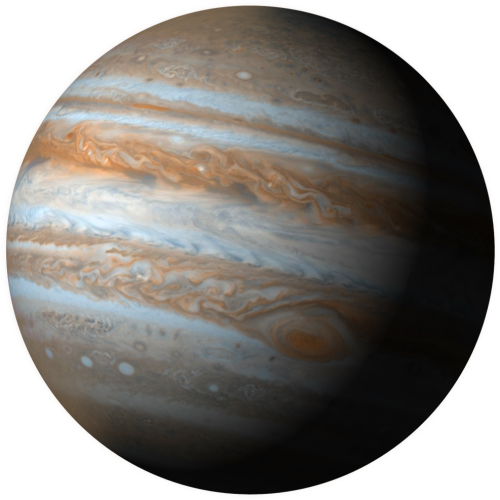

EL PLANETA MERCURIO:
Mercurio fue nombrado de esta manera en honor a Hermes, el mensajero de los dioses griegos del Olimpo. Más tarde los romanos lo bautizaron, tal y como ocurre con el resto de los planetas, con el equivalente en su mitología para los dioses griegos, en este caso Mercurio. Y con ese nombre ha llegado hasta nuestros días.
Con un tamaño tan solo un poco mayor al de nuestra luna, es el planeta más pequeño del sistema solar y el más cercano al Sol. Se trata del menor de los planetas rocosos del sistema solar y de manera similar a la Luna, presenta una superficie plagada de cráteres, en parte, debido a la finísima y casi ausente atmósfera (exosfera) que le rodea. Con una velocidad de 170.5030 kilómetros por hora, también se trata del planeta que viaja más rápido a través del espacio -de aquí su nombre- ya que la velocidad de un planeta incrementa con su cercanía a la estrella que orbita.
Por su proximidad al Sol, desde la superficie de Mercurio nuestro astro se vería 3 veces más grande que desde la Tierra, y su brillo sería hasta 7 veces superior. También cabría esperar que, por su cercanía al Sol, Mercurio fuera el planeta más caliente del sistema solar, sin embargo, contradiciendo la intuición, este honor es para el Venus, pues es en Venus que, debido a su densa atmósfera, se registran las temperaturas más altas de todo el sistema solar.
La ausencia práctica de atmósfera en Mercurio también propicia que las temperaturas en el mismo sean las más extremas del sistema solar, pudiéndose alcanzar durante el día los 430ºC y por la noche los -180ºC. También cabe decir que eje de rotación de Mercurio está inclinado apenas 2 grados con respecto al plano de su órbita alrededor del Sol. Eso significa que gira casi perfectamente en posición vertical y, por lo tanto, no experimenta estaciones.
EL PLANETA VENUS

Solo tras el Sol y la Luna, Venus es el objeto más brillante que se puede ver en el firmamento desde la Tierra. Esto propició, ya desde la antigüedad, que por su brillo y belleza los romanos asociaran el planeta con la diosa de la belleza y el amor, Venus, de la cual recibe su nombre.
Parte de la intensidad del brillo de Venus es debido a la cercanía con la Tierra, ya que se trata del planeta que más próximo se encuentra de nosotros. También es el segundo planeta más cercano al Sol. Se trata de otro de los 4 planetas rocosos del sistema solar y debido a la gran similitud tanto en tamaño como en densidad con nuestro planeta, en ocasiones es denominado como el planeta gemelo de la Tierra.
No obstante, Venus no es tan parecido a la Tierra como cabría esperar. Uno de los mejores ejemplos de ello es su atmósfera, muy espesa y rica en dióxido de carbono. De hecho, la atmósfera de Venus es tan densa que desde su superficie el Sol se vería como un tenue destello de luz. Esto, junto a las densas nubes de ácido sulfúrico que la rodean generan tal efecto invernadero que hace de Venus el planeta más caliente del sistema solar. Así la temperatura en Venus puede alcanzar los 475ºC, suficiente como para derretir el plomo, y la presión a nivel de superficie puede alcanzar las 90 atmósferas.
Otra gran diferencia con la Tierra y con el resto de planetas del sistema solar es que Venus gira sobre su eje al contrario que los demás, es decir, en el caso de Venus el Sol sale por el oeste y se pone por el este. Además su rotación es tremendamente lenta, ya que tarda 243 días en dar una vuelta sobre si mismo, lo que propicia que el año en Venus, el cual dura 225 días, sea mas corto que un día en el planeta.
Al igual que la Tierra, Venus posee un núcleo de hierro envuelto por un manto de roca caliente y una corteza rocosa. En cuanto a su superficie presenta un color oxidado y está salpicada de montañas y miles de grandes volcanes, algunos de los cuales los científicos creen que aún siguen activos.
EL PLANETA TIERRA

Por simple que pueda parecer, el nombre de nuestro planeta, no obstante, también tiene un origen en la mitología griega. Así, en este caso, los antiguos griegos denominaron a la Tierra en honor a la diosa Gea, la cual era adorada como la creadora del universo y la madre, tanto de los dioses primordiales, los titanes, como de los primeros humanos. Al igual que sucede con el resto de planetas, posteriormente los romanos la bautizaron con el nombre de su diosa equivalente, Terra, el cual ha transcendido hasta el presente con las evidentes adaptaciones.
Nuestro hogar, la Tierra, es el quinto planeta más grande y el tercero en cercanía al Sol del sistema solar. Entre otras cualidades como la rotación de su eje respecto a la elíptica, la composición de su atmósfera rica en oxígeno o la presencia de agua líquida, esta distancia de la Tierra al Sol -situada dentro de la zona de habitabilidad de una estrella- es la responsable de que nuestro planeta sea el único del sistema solar en el que hasta el momento se haya encontrado vida.
De hecho, en la Tierra se suceden una gran cantidad de características que hacen posible la vida. Por ejemplo, la atmósfera de la Tierra, la cual también nos protege de la radiación procedente del Sol y del espacio, está compuesta por un 78 % de nitrógeno, un 21 % de oxígeno y un 1 % de otros ingredientes: el equilibrio perfecto para respirar y vivir. Los vastos océanos de la Tierra proporcionaron un lugar conveniente para que comenzara la vida hace unos 3.800 millones de años. La Tierra es del mismo modo el único planeta del sistema solar con una sola luna, la cual es, en muchos sentidos, responsable de hacer de la Tierra un hogar habitable al regir las mareas o estabilizar la oscilación de nuestro planeta, lo que ha hecho que el clima sea menos variable durante miles de años.
EL PLANETA MARTE

El planeta Marte recibe su nombre en honor a Ares, el dios griego de la guerra. Más tarde los romanos lo bautizaron, tal y como ocurre con el resto de los planetas, con el equivalente en su mitología para los dioses griegos, en este caso Marte.
Marte, también conocido como el planeta Rojo, es el más alejado del Sol de los cuatro planetas rocosos del sistema solar, y el segundo más cercano a la Tierra, aunque cuenta aproximadamente con solo la mitad de su tamaño. Se trata de un planeta sencillo de identificar en el firmamento nocturno debido al brillo rojizo que hace honor a su nombre.
Pese a lo que pudiera parecer por su rojo color, Marte no es planeta cálido. Muy al contrario, en la actualidad se trata de un planeta seco, rocoso, inhóspito y frío, algo que no exime al planeta de haber albergado unas condiciones pasadas en las que la vida hubiera sido posible. Así, se cree que en el pasado Marte fue un mundo más cálido cubierto de agua, motivo por el que los científicos no cesan en su empeño de encontrar signos de vida pretérita. De hecho, en Marte podemos encontrar agua a día de hoy, no obstante la atmósfera marciana es demasiado delgada para que exista agua líquida por mucho tiempo en la superficie, por lo que la mayor parte del agua marciana se encuentra en forma de hielo debajo de la superficie, en las regiones polares.
Además, al igual que la Tierra, en Marte también se suceden las estaciones, pero estas duran más que aquí, ya que Marte tarda casi más del doble de tiempo que nuestro planeta en orbitar alrededor del Sol. Hace poco también, los científicos demostraron que Marte es un planeta geológicamente activo en el que se han identificado martemotos -el equivalente marcianos a los terremotos- y aunque muy débil, también un campo magnético que indica que, al igual que en la Tierra, el núcleo metálico de Marte actuó como una dinamo. Además en Marte se encuentran también algunos de los accidentes geográficos más interesantes del sistema solar, como es el gran sistema de cañones de 4.800 kilómetros conocido como Valles Marineris o el Monte Olimpo, que con 22,5 kilómetros de altura es a su vez la montaña y el volcán más grande del sistema solar.
Marte tiene dos lunas pequeñas llamadas Fobos y Deimos, ambas nombradas en honor a los hijos del dios Ares en la mitología griega, y de las cuales se piensa que pueden ser asteroides capturados.
EL PLANETA JUPITER
 Como no podía ser de otra manera, Júpiter, con más del doble de la masa que el resto de planetas juntos, es el planeta más grande del sistema solar por lo que recibe su nombre del dios entre los dioses del Olimpo, Zeus; Júpiter en la mitología romana.
Y es que todo en Júpiter adquiere magnitudes extraordinarias. Para hacernos una idea, en torno a la línea del ecuador de Júpiter cabrían hasta 11 planetas Tierra puestos en fila. La velocidad a la que gira este coloso del sistema solar también es endiablada, pues no solo hay que tener en cuenta que el día en Júpiter dura apenas unas escasas 10 horas mientras que en la Tierra un día dura 24 horas, sino también que su radio es 10 veces mayor que el de nuestro planeta. Esta también es la causa de los fuertes vientos que se producen en la atmósfera de Júpiter, los cuales en el ecuador del planeta pueden alcanzar hasta los 540 kilómetros por hora, dando lugar a las tormentas más impresionantes del sistema solar, como es el caso de la Gran Mancha Roja, una tormenta que según los científicos lleva activa más de 300 años y en la cual cabrían 2 planetas como la Tierra.
Sin duda, uno de los aspectos más fascinantes de Júpiter es su atmósfera. De hecho, Júpiter es conocido por sus distintivos cinturones y zonas: bandas de nubes blancas y rojizas que envuelven el planeta y le dan un aspecto realmente impresionante. Se cree que las bandas más oscuras se corresponden con columnas de gases que contienen azufre y fósforo que se elevan desde el interior más cálido del gigante gaseoso.
También es muy probable que Júpiter no tenga una, sino tres capas de nubes repartidas en la parte más baja de su atmósfera, la cual, en su totalidad, puede elevarse hasta los 1.000 kilómetros. Así, los astrónomos creen la capa más interna de la atmósfera podría estar formada por hielo de agua y vapor, la capa intermedia probablemente esté conformada por cristales de hidrosulfuro de amonio y la capa superior de hielo de amoníaco.
Como es apreciable, Júpiter es un mundo supermasivo, pero compuesto por elementos ligeros, principalmente Helio e Hidrógeno, pero ¿se trata de un planeta formado exclusivamente por gas? La respuesta es que todavía se desconoce la naturaleza del interior del planeta, pero los científicos barajan la posibilidad de que Júpiter alberge un núcleo sólido en su interior, aunque de ser así, es probable que solo tenga el tamaño de la Tierra.
¿Se trata de un planeta apto para albergar vida? Por todas estas características, además de por la enorme gravedad que impera en Júpiter, la cual además funciona como un escudo antiasteroides para los planetas interiores del sistema solar, las probabilidades son infinitamente escasas. Sin embargo, Júpiter es un pequeño sistema planetario en si mismo, por los que los científicos no descartan que la vida pudiera desarrollarse en alguna de sus 79 lunas, entre las cuales destacan Europa, Ganímedes, Ío y Calisto, bautizadas en honor a las amantes del dios Zeus.
EL PLANETA SATURNO

Saturno es otro de los planetas más grandes del sistema solar, por lo que al igual que Júpiter, recibe su nombre de uno de los dioses más importantes de la mitología para griegos y romanos, quienes respectivamente se referían a él como Cronos y Saturno, y en sendas mitologías fueron padres de Zeus y Júpiter. Cronos y Saturno eran, de hecho, los dioses del tiempo y la agricultura. Saturno es el planeta que a lo largo del año se puede observar durante más tiempo en el firmamento, por lo que la elección de ambas culturas para nombrar a este gigante gaseoso no es una casualidad.
Saturno es el sexto planeta en distancia al sol del sistema solar. También se trata del segundo planeta más grande (9 planetas Tierra en fila cabrían a lo largo de la línea de su ecuador) y el otro de los gigantes gaseosos de nuestro vecindario cósmico, aunque al igual que sucede con Júpiter, los científicos creen que podría albergar una núcleo sólido en su interior.
Sin duda, el elemento más llamativo de Saturno son sus 7 anillos, los cuales se cree que están compuestos millones de pedazos de hielo y roca procedentes cometas, asteroides o lunas que se desintegraron antes de llegar al planeta debido a la poderosa gravedad de Saturno. Este sistema de anillos se extiende hasta una distancia de 282.000 kilómetros del planeta, pudiendo alcanzar un grosor de 10 kilómetros en los más importantes. Una curiosidad sobre estos anillos es que fueron nombrados alfabéticamente en el orden en que fueron descubiertos, y no en el orden en el que se establecen. Así, los anillos principales son A, B y C. Los anillos D, E, F y G son más débiles y se descubrieron más recientemente. Y comenzando en Saturno y desplazándonos hacia el exterior encontraríamos los anillos, D,C, B, A, F, G y E.
Al igual que Júpiter, Saturno tiene 53 lunas conocidas con 30 lunas adicionales a la espera de la confirmación de su descubrimiento, es decir, un total de 83 lunas, algunas tan interesantes como Titán o Encélado.
EL PLANETA URANO

El dios Urano fue en la mitología griega el dios del cielo. Sin embargo, cuando los griegos se referían al objeto que brillaba en el cielo con este nombre, no se estaban refiriendo a un planeta, si no que creían que se trataba de una estrella. Para constatar que Urano se trataba de un planeta hubo que esperar hasta el año 1781, cuando fue descubierto por Sir William Herschel, quien quiso bautizarlo en honor al rey Jorge III de Inglaterra. Georgium Sidus, el nombre propuesto por Herschel para este gigante de hielo no prosperó, y la comunidad astronómica acordó en el año 1850 que este adoptara el nombre de Urano, un nombre de origen mitológico en consonancia al resto del planetas del sistema solar.
Urano es el séptimo planeta en distancia al sol, el tercero más grande, el cuarto más masivo y el segundo menos denso del sistema solar. Se trata del primero de los gigantes helados de nuestro sistema planetario y está compuesto por una especie de "hielo" fluido de agua, amoníaco y metano. De hecho, el manto helado de Urano no está compuesto de hielo en el sentido convencional, sino que es un fluido caliente y denso formado por agua, amoníaco y otros volátiles.
Urano es un planeta muy diferente a todos los que hemos visto con anterioridad, aunque comparte una característica especialmente excepcional con el planeta Venus, y es que rota de oeste a este. Con la salvedad, eso si, algo que lo hace mucho más especial, de que gira en un ángulo de casi 90 grados desde el plano de su órbita, lo cual hace que Urano parezca girar de costado, orbitando alrededor del Sol como una bola rodante.
El gigante de hielo está rodeado por 13 anillos tenues, los cuales forman el segundo sistema anular que fue descubierto en el sistema solar tras el de Saturno. También cuenta con 27 satélites naturales conocidos, los cuales reciben su nombre en honor de los personajes de las obras de William Shakespeare y Alexander Pope.
EL PLANETA NEPTUNO

El nombre del planeta Neptuno, dios de los océanos para los romanos, en un proceso parecido al que tuvo lugar con Urano, fue adoptado por consenso dentro de la comunidad de astrónomos. Neptuno fue el primer planeta descubierto mediante cálculos matemáticos, ya que los antiguos, al igual que ocurrió con Urano, pensaban que se trataba de una estrella.
Oscuro, frío y regido por vientos supersónicos, el gigante de hielo Neptuno es el octavo y más distante planeta de nuestro sistema solar. Está tan lejos que es el único de los planetas que no es visible desde la Tierra a simple vista.
Neptuno guarda muchas similitudes con su vecino Urano. Así, Neptuno se clasifica como un gigante de hielo, y la mayor parte de su masa corresponde con una especie de "hielo" fluido de agua, amoníaco y metano que se asienta sobre un pequeño núcleo rocoso. Al igual que sucede en Urano, la atmósfera de Neptuno se compone principalmente de hidrógeno molecular, helio atómico y metano, aunque algunas pequeñas diferencias en esta hace que los dos planetas se vean de colores azules diferentes.
Neptuno tiene 14 lunas conocidas que llevan el nombre de dioses del mar y ninfas en la mitología griega y también un sistema de anillos que cuenta con cinco anillos principales y cuatro arcos de anillos más, que son cúmulos de polvo y escombros probablemente formados por la gravedad de una luna cercana.